Phase 2 · Systems maps, round two · Direction C · October 28, 2026 · Data visualization and systems lead
Loop Lines
The loop network drawn as a transit map. Each of Atlas V7's 20 numbered loops is a closed line, each of the 25 variables those loops run through is a station, and a variable several loops share is an interchange. The catalog miniature is each loop's own line lifted from the map, the R8 card is that line at full size, and the whole-system map is a poster on Prussian. Scope is a spec and specimens (G1-08); V7, the atlas file and the ledgers are untouched.
Where it landed. The studio picked this poster as the whole-system map, with the Newsprint working map and the R-01 reform view; Direction A's catalog and cards carry the loops, joined by this map's locator inset. This board now shows the fix pass on those three views.
Checked. Data check against V7: 0 mismatches across every drawing; a mutation test caught each of eight planted errors. Every page passes the rendered checks at 1440 and 390 px, and the label audit ported from Direction A finds no collision.
Open first. The fix pass, then the poster, the working map and the reform view. Each is a real page, linked under its capture.
Fix pass, after the creative director's round-two review
What changed in this pass
The studio picked this poster as the whole-system map, with the working map and the reform view. This pass makes the review's fixes 1 to 6 and 10 and the appendix items. No station moved: the 25-row station table is unchanged.
- 1. Every bullet on its own line. Each line bullet now sits on a stretch that only its loop rides, centered on its track, or beside that stretch on a 1 px leader where the stretch has no room (nine of the twenty, all two-step shuttles whose short stretch also holds two tags). Sign tags are placed after the stations and names, by the same kind of collision score, so they slide clear. R4a's bullet sits on L56 between its tag and D7, and the plus tag on the C1 to D7 pair moved up toward C1. The verifier now checks that every bullet's stretch carries no other loop and that the bullet or its leader touches the loop's own drawn track.
- 2. Kind glyph off the screen bullets. On screen the bullet is the outlined code alone, and the legend reads “R: feeds itself. B: pushes back.” The print poster (its own drawing, 20261028_Loop-Lines-Poster-Print.svg) keeps the glyph cell, where the glyph prints at about 30 px. The card head and catalog chips draw the glyph at 24 px.
- 3. The lit line reads. On the working map, the reform view and the locator the lit loops draw at 6 px Charcoal (red at the reform's targets), every other line at 2 px Stone, and stations on a lit loop fill Charcoal with Newsprint IDs. The grayscale proofs below show the lit loops by weight alone.
- 4. The frame in words. The ticks and the side text are gone. Each band is one horizontal line, for example “Outside drivers, 5 variables. 12 connections reach areas A to E: 5 into area A, 4 into area B and 1 each into areas C, D and E.” The economy and technology lines share the bottom band. The text says areas A to E because two of those connections reach A3, which sits in area A on no loop.
- 5. The areas read as territories. The tint moves one step, from #2C3B64 (1.21:1 against Prussian) to #39476D (1.45:1). In the grayscale proofs at 25 percent size below, the five areas read only at the stronger step. White names on the new tint measure 9.15:1. B's patch under the hub and E's hub strip carry their letters, and the E2 island grew to hold its full name.
- 6. A 390 px form for the three views. Below 1200 px the poster, working map and reform view show the drawing fit to the screen width in a focusable region, a link to the full-size image, the reform panel where there is one, then the lines in words as a list.
- 10. A's label audit in C's check. Label audit, ported from Direction A's check: 0 collisions across 9 page renders and the print drawing (726 labels on screen: text past the drawing, label on label, label on a sign tag, bullet or station, label on a line). Its self-test caught 5 of 5 planted faults. The two-line C and D district names, which A's audit flagged on the reform view, now sit 24 px apart.
- Appendix items. Miniature names are placed by a search over every name's eight sides, so R10's and R12's tiles no longer collide. The R10 card's step labels step away from their own line, so “Least certain step” clears L53. The phone card lists its routes in place of the four-column table, so nothing runs past the card. The phone step list no longer repeats “Documented on the public record”.
Field tint proof, grayscale at 25 percent size
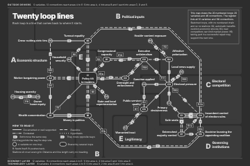
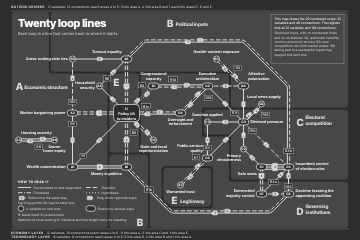
The three views at 390 px
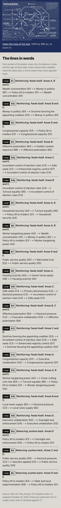
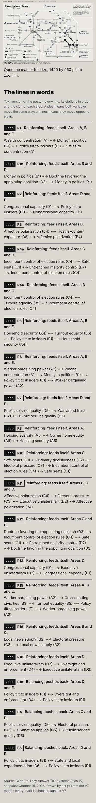
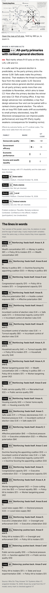
Specimen 1
The poster on Prussian, 1440 by 960 px and 24 by 36 inches
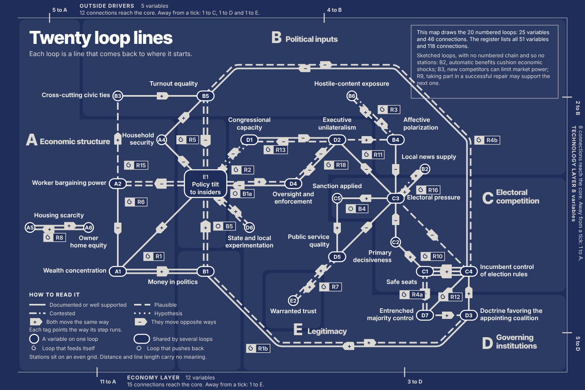
The lines in words
| Line | Kind | Stations in order | Areas |
|---|---|---|---|
| LoopR1 | Reinforcing: feeds itself | Wealth concentration (A1) +→ Money in politics (B1) +→ Policy tilt to insiders (E1) +→ Wealth concentration (A1) | A, B and E |
| LoopR1b | Reinforcing: feeds itself | Money in politics (B1) +→ Doctrine favoring the appointing coalition (D3) +→ Money in politics (B1) | B and D |
| LoopR2 | Reinforcing: feeds itself | Congressional capacity (D1) −→ Policy tilt to insiders (E1) −→ Congressional capacity (D1) | D and E |
| LoopR3 | Reinforcing: feeds itself | Affective polarization (B4) +→ Hostile-content exposure (B6) +→ Affective polarization (B4) | B |
| LoopR4a | Reinforcing: feeds itself | Incumbent control of election rules (C4) +→ Safe seats (C1) +→ Entrenched majority control (D7) +→ Incumbent control of election rules (C4) | C and D |
| LoopR4b | Reinforcing: feeds itself | Incumbent control of election rules (C4) −→ Turnout equality (B5) −→ Incumbent control of election rules (C4) | B and C |
| LoopR5 | Reinforcing: feeds itself | Household security (A4) +→ Turnout equality (B5) −→ Policy tilt to insiders (E1) −→ Household security (A4) | A, B and E |
| LoopR6 | Reinforcing: feeds itself | Worker bargaining power (A2) −→ Wealth concentration (A1) +→ Money in politics (B1) +→ Policy tilt to insiders (E1) −→ Worker bargaining power (A2) | A, B and E |
| LoopR7 | Reinforcing: feeds itself | Public service quality (D5) +→ Warranted trust (E2) +→ Public service quality (D5) | D and E |
| LoopR8 | Reinforcing: feeds itself | Housing scarcity (A5) +→ Owner home equity (A6) +→ Housing scarcity (A5) | A |
| LoopR10 | Reinforcing: feeds itself | Safe seats (C1) +→ Primary decisiveness (C2) −→ Electoral pressure (C3) −→ Incumbent control of election rules (C4) +→ Safe seats (C1) | C |
| LoopR11 | Reinforcing: feeds itself | Affective polarization (B4) −→ Electoral pressure (C3) −→ Executive unilateralism (D2) +→ Affective polarization (B4) | B, C and D |
| LoopR12 | Reinforcing: feeds itself | Doctrine favoring the appointing coalition (D3) +→ Incumbent control of election rules (C4) +→ Safe seats (C1) +→ Entrenched majority control (D7) +→ Doctrine favoring the appointing coalition (D3) | C and D |
| LoopR13 | Reinforcing: feeds itself | Congressional capacity (D1) −→ Executive unilateralism (D2) −→ Congressional capacity (D1) | D |
| LoopR15 | Reinforcing: feeds itself | Worker bargaining power (A2) +→ Cross-cutting civic ties (B3) +→ Turnout equality (B5) −→ Policy tilt to insiders (E1) −→ Worker bargaining power (A2) | A, B and E |
| LoopR16 | Reinforcing: feeds itself | Local news supply (B2) +→ Electoral pressure (C3) +→ Local news supply (B2) | B and C |
| LoopR18 | Reinforcing: feeds itself | Executive unilateralism (D2) −→ Oversight and enforcement (D4) −→ Executive unilateralism (D2) | D |
| LoopB1a | Balancing: pushes back | Policy tilt to insiders (E1) +→ Oversight and enforcement (D4) −→ Policy tilt to insiders (E1) | D and E |
| LoopB4 | Balancing: pushes back | Public service quality (D5) −→ Electoral pressure (C3) +→ Sanction applied (C5) +→ Public service quality (D5) | C and D |
| LoopB5 | Balancing: pushes back | Policy tilt to insiders (E1) +→ State and local experimentation (D6) −→ Policy tilt to insiders (E1) | D and E |
Specimen 2
The working map on Newsprint, with one line lit

Specimen 3
The catalog page, a line guide, at 1440 and 390 px
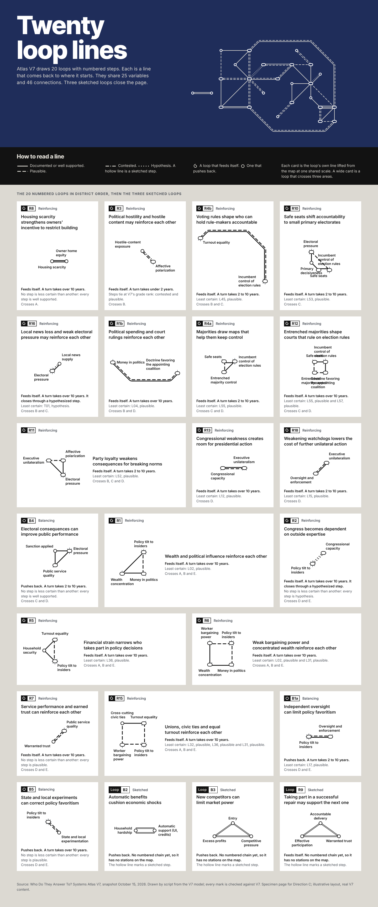
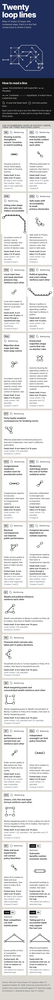
Specimen 4
The R8 card, at 1440 and 390 px, with the locator inset
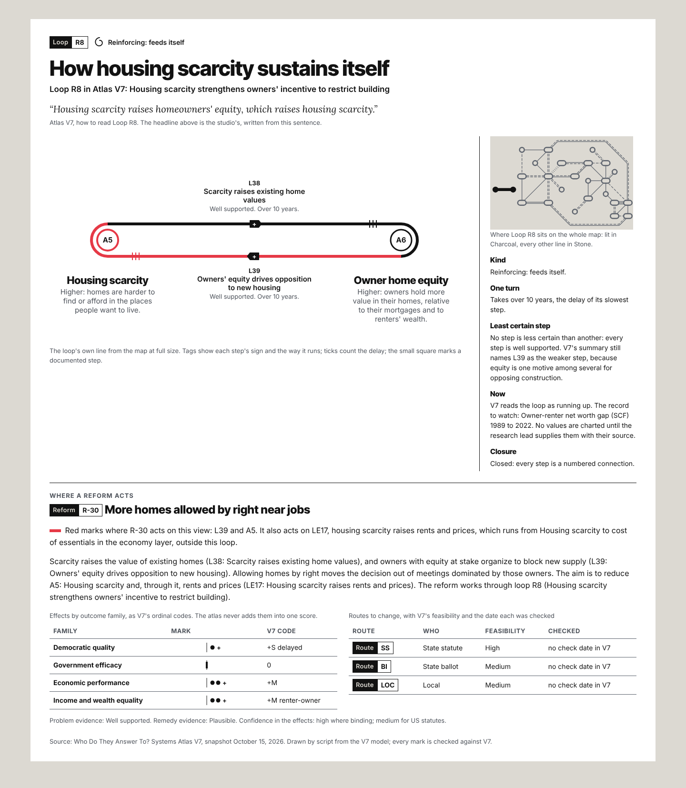
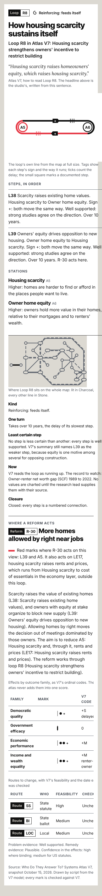
Specimen 5
The R10 card, the stress test
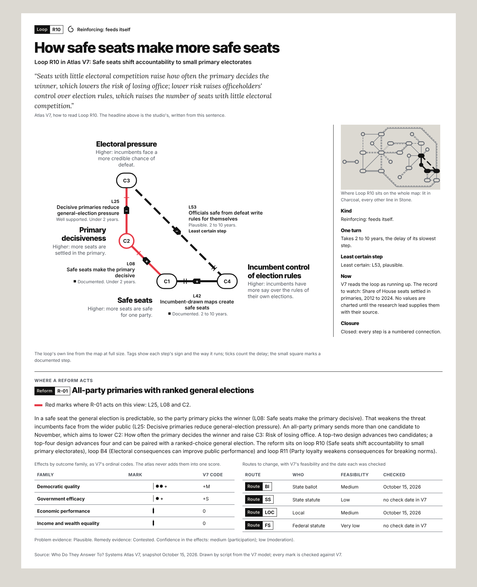
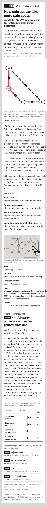
Specimen 6
The R-01 reform view on White
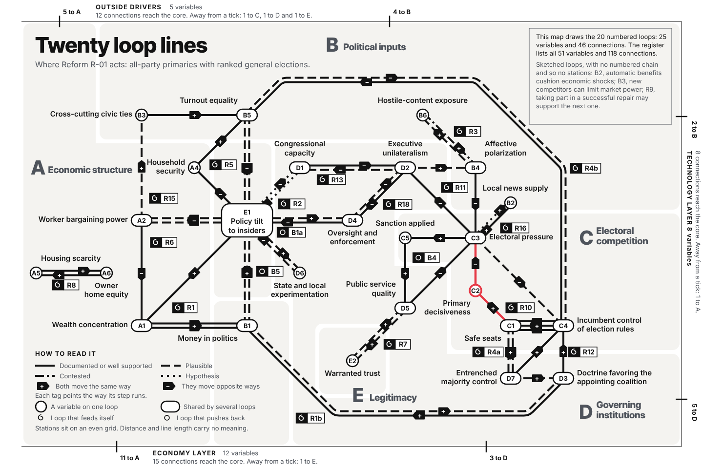
Proofs
Grayscale proof of each page
Lines, textures, tags, rings and capsules carry every distinction in gray. On White, red turns mid gray; the thicker red ring at C2 and A5 and the panel text still name the targets.

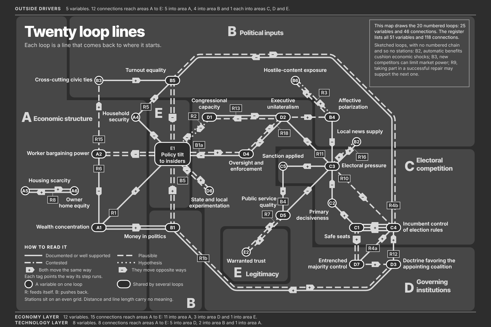

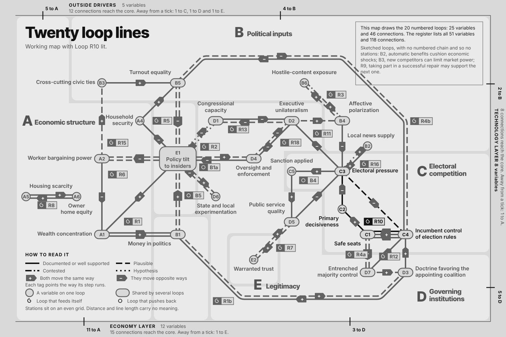

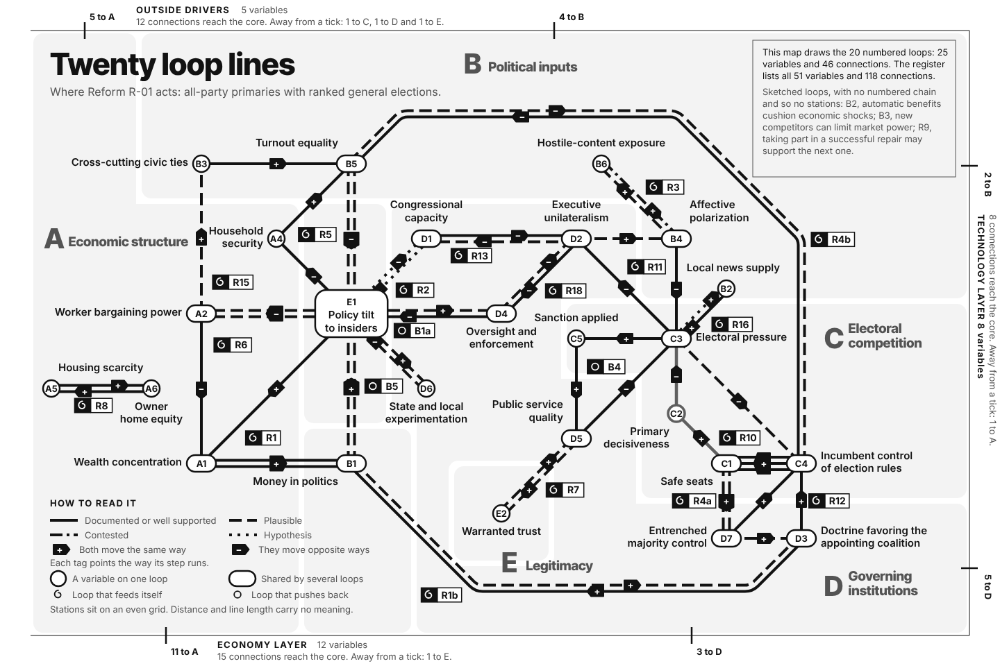

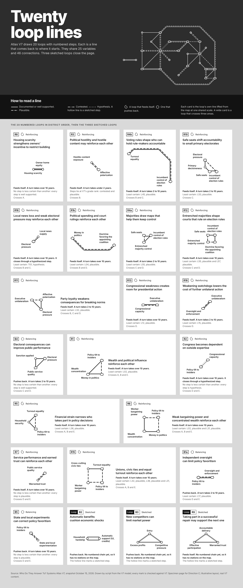

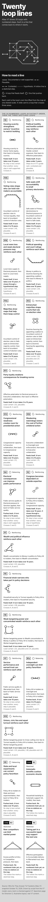

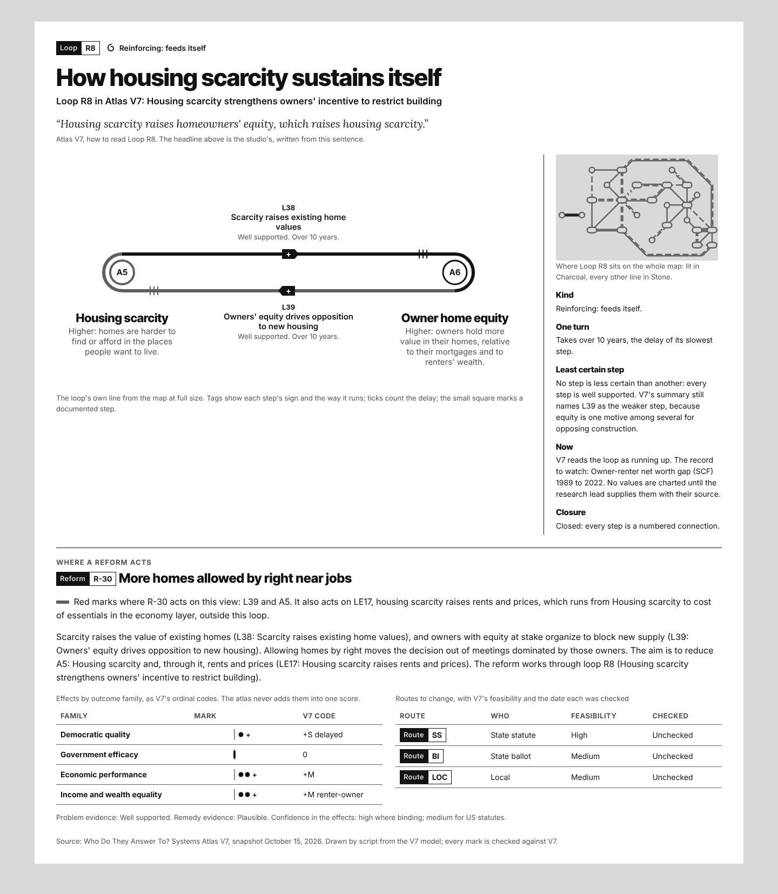

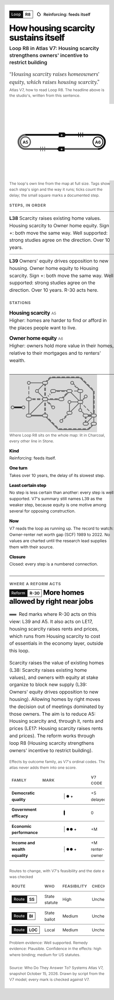

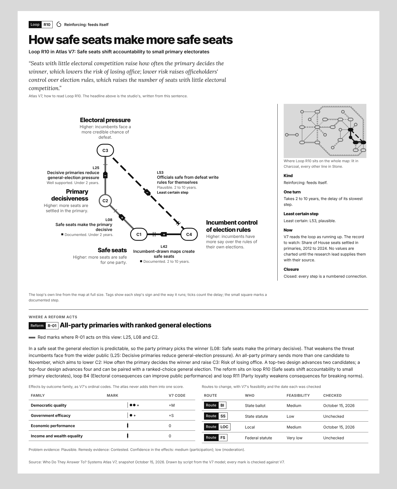

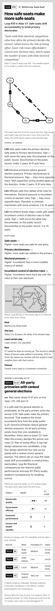

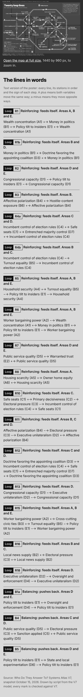

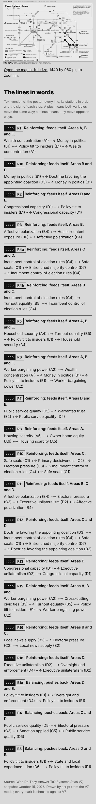

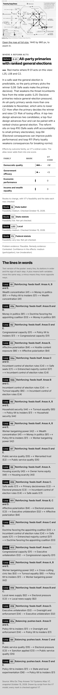
The spec
How the drawing is built
- Grid
- One square grid, 36 px a cell on the 1440 poster and 2.4 times that in the PDF. Stations sit on whole cells. Routes use 0, 45 and 90 degrees only. The grid is even and the spacing is close to even: a straight corridor runs 2 to 6 cells, most of them 3 to 6, because a 45 degree triangle cannot keep all three sides equal. V7 holds no distances, and the legend says that distance and line length carry no meaning.
- Routes
- A corridor is a pair of stations joined by one or more numbered-loop connections; there are 35. A corridor runs straight when its stations already align on the grid (33 do). The other 2, R4b and R1b, are routed by an A* search on the grid that keeps one cell from every other station, stays off every station name, never shares a cell with another corridor and never leaves a station in a direction already taken. The result has no crossing.
- Tracks
- A loop rides each of its corridors as one 4 px track, 9 px apart from its neighbors. A loop keeps to the side of a shared corridor that faces its own inside, nested loops innermost; a two-step loop runs clockwise. One corner radius, 22 px on the corridor's center line; parallel tracks turn on concentric arcs, 22 px plus or minus their offset.
- Stations
- An open ring 24 px across for a variable on one loop; an open capsule 42 by 24 px for a variable several loops share; the hub capsule, which holds its name, for a variable on five or more loops (E1 only). White 2.5 px edge, Prussian fill, the V7 ID inside in Inter 13 bold. Names beside them in White Inter 15 semibold, V7's chain labels, one or two lines, never truncated. On a lit view a station on a lit loop fills Charcoal with its ID in Newsprint; the rest keep a Stone ring.
- Signs
- One tag per connection, across its bundle when several loops ride it, at the middle of its longest straight run or slid along it by the least distance that clears every station and name. Newsprint fill, the sign in Prussian Inter 13 bold, the tag's point toward the way the step runs. The two directions of a two-step loop carry their tags together, up to 48 px apart. On a lit view a lit tag turns Charcoal with a Newsprint sign.
- Textures
- Gate 1 mark M1, V7's code: documented and well supported solid, plausible 9 4, contested 9 3 2 3, hypothesis 2 4, written for a 2 px line and scaled with weight (18 8, 18 6 4 6 and 4 8 on the poster).
- Line bullets
- M3 in a bullet form, 22 px tall: the code outlined in Inter 14 bold, set on a stretch that only its loop rides, centered on its track, or beside that stretch on a 1 px leader when the stretch has no room. Placed by a collision score, the loops with the fewest clear places first. On screen the loop's R or B carries its kind; the print drawing adds a 20 px ink cell with the kind glyph (spiral for a loop that feeds itself, ring for one that pushes back), which prints at about 30 px.
- Districts
- Fields A to E drawn on the grid from the field table (20261028_Loop-Lines-District-Fields.csv), 8 px apart, corners rounded at 14 px, tinted #39476D (Prussian mixed 16 percent toward Newsprint in OKLab, one step stronger than round two's 8.5 percent). B1 sits in its own B patch south of the hub and E2 in an E island inside D, because R1, R6 and R7 put them there; the B patch and E's hub strip carry their letters, and the E island holds the E name. District names in Newsprint Inter Tight 800, the letter at 40 px, two-line names at 24 px leading.
- Frame
- Outside drivers along the top, the economy and technology layers along the bottom, each as one horizontal line in Inter 13: the group's name in capitals, its variable count, and how many of its connections reach each area (12, 15 and 8 in all), counted from V7 and checked by the verifier.
- Lit views
- Working map, reform view and locator: the lit loops at 6 px Charcoal (red at the targets of the named reform), every other loop at 2 px Stone, dash lengths scaled with each weight. The locator keeps the same three-to-one ratio at its scale.
- Phone form
- Below 1200 px a view page shows its capture fit to the screen width in a focusable region, a link to the full-size image, the reform panel where there is one (routes as a list), then the lines in words as a list.
- Surfaces
- Poster: Prussian with Newsprint lines (9.42:1) and White names (13.28:1), no red; White on the field tint measures 9.15:1. Working map: Newsprint, one line in Charcoal, the rest in Stone. Catalog: Newsprint with White cards, a Prussian band head and a Charcoal how-to-read strip. Card and reform view: White, red only at the targets of the one reform the view names (4.17:1).
- Miniature
- The loop's own tracks lifted from the poster at one shared scale, 0.38 of the poster cell: 3 px lines, 6 px rings, names in Inter 13 semibold, placed by a search over each name's eight sides that keeps them off one another, the stations and the line, Stone ghost stubs 0.85 cell long for the other corridors at each shared station. No signs, ticks or red. The caption names the kind, the turn in words, the least certain step with its grade, and the areas it crosses.
- Card
- The loop's line at full size, the shape it has on the map: 6 px line, 22 px rings, station names in Inter Tight 700 22 px with V7's reading rule for a higher value in Inter 15, each step with its ID and V7 name, sign tag, grade word, record square when documented, and one to three delay ticks. Labels are placed by a collision score over 96 trial scales and offsets. V7's how_to_read in Lora Italic 20 px. At 390 px the drawing keeps IDs only and the words follow as lists.
- Catalog
- Band head 1440 by 560 px. Four columns, 24 px gutters. Cards in district order: A's lines first, then B, C, D and E, a line placed after the last area it reaches. A card spans two columns when its loop crosses three areas. Rows always fill; the three sketched loops close the page in the same grid.
Notation budget, as built
| Mark | Miniature | Loop card | Whole-system map |
|---|---|---|---|
| Line texture for the grade (M1) | Yes, dash code scaled by weight | Yes | Yes |
| Hollow line for sketched steps (M1) | Yes, on the three sketched tiles | Not drawn: R8 and R10 have none | Listed in words in the frame |
| Record square on documented labels (M1) | No | Yes | No |
| Grade words with glosses (M2) | Caption only | Yes, with the gloss in the phone list | Legend only |
| Typed chips (M3) | Line bullet | Full chips for loop, reform and route | Line bullets |
| Signs | No | Yes, a pointing tag | Yes, one pointing tag per connection |
| Delay ticks (M4) | No; delay in words in the caption | Yes | No |
| Effect pips, routes (M4) | No | Yes, never summed | No; on the reform page below the map |
| Weakest step | Its texture, named in the caption | Named and explained | No |
| Pillar Red | Never | Targets of the named reform | Reform view on White only |
Layout data
The station table
| ID | Station name (V7) | District | Column | Row | Name side | Loops | Why it sits there |
|---|---|---|---|---|---|---|---|
| A1 | Wealth concentration | A | -6 | 6 | w | R1 R6 | Bottom-left corner of R6; R1 closes on the diagonal to E1 |
| A2 | Worker bargaining power | A | -6 | 0 | w | R6 R15 | Shared corner of R15 above and R6 below; name sits to the west, above R8 |
| A4 | Household security | A | -3 | -3 | w | R5 | Inside R15 at the apex of R5 (A4 to B5 to E1) |
| A5 | Housing scarcity | A | -12 | 3 | ne | R8 | R8 first station; R8 runs left to right like the line map inside a train car |
| A6 | Owner home equity | A | -8 | 3 | s | R8 | R8 stands alone in district A as a short shuttle between the fan's left edge and A5 |
| B1 | Money in politics | B | 0 | 6 | sw | R1 R1b R6 | Bottom of the R6 square; R1b leaves southeast toward D3 |
| B2 | Local news supply | B | 15 | -1 | n | R16 | R16 shuttle from C3 northeast, two cells, clear of the R4b arch |
| B3 | Cross-cutting civic ties | B | -6 | -6 | w | R15 | Top-left corner of the R15 square (A2 to B3 to B5 to E1) |
| B4 | Affective polarization | B | 13 | -3 | ne | R3 R11 | Top of the R11 triangle; R3 shuttle northwest to B6 |
| B5 | Turnout equality | B | 0 | -6 | nw | R4b R5 R15 | Top of the R15 square; R4b leaves northeast toward C4 |
| B6 | Hostile-content exposure | B | 10 | -6 | n | R3 | R3 shuttle; two cells below the R4b arch |
| C1 | Safe seats | C | 15 | 6 | sw | R4a R10 R12 | Shared by R10 R4a R12; three lines run west from C4 |
| C2 | Primary decisiveness | C | 13 | 4 | sw | R10 | R10 runs south from C3 then southeast |
| C3 | Electoral pressure | C | 13 | 1 | e | R10 R11 R16 B4 | Hub of four loops; seven spokes; label takes the free east port |
| C4 | Incumbent control of election rules | C | 18 | 6 | e | R4a R4b R10 R12 | East edge; its five spokes fan west so R4b arrives from the north |
| C5 | Sanction applied | C | 9 | 1 | n | B4 | West corner of the B4 triangle, four cells from C3 so its bullet fits inside |
| D1 | Congressional capacity | D | 3 | -3 | n | R2 R13 | R2 shuttle from E1 northeast; R13 shuttle east to D2 |
| D2 | Executive unilateralism | D | 9 | -3 | n | R11 R13 R18 | Meets D1 and D4 shuttles; R11 runs east to B4 and southeast to C3 |
| D3 | Doctrine favoring the appointing coalition | D | 18 | 9 | e | R1b R12 | Bottom-right corner of R12; R1b arrives from the south |
| D4 | Oversight and enforcement | D | 6 | 0 | s | R18 B1a | East of E1 at six cells so the E1 capsule leaves the B1a shuttle visible |
| D5 | Public service quality | D | 9 | 5 | nw | R7 B4 | Southwest corner of the B4 triangle; R7 shuttle southwest to E2 |
| D6 | State and local experimentation | D | 3 | 3 | s | B5 | B5 shuttle from E1 southeast |
| D7 | Entrenched majority control | D | 15 | 9 | w | R4a R12 | Bottom-left corner of the R12 square |
| E1 | Policy tilt to insiders | E | 0 | 0 | inside | R1 R2 R5 R6 R15 B1a B5 | Hub of seven loops at the center; eight spokes in eight directions; a station on five or more lines holds its name inside |
| E2 | Warranted trust | E | 6 | 8 | s | R7 | R7 shuttle end; an E island inside D, south of the hub |
The review's tests
Wall test, 2x test and the other two
Wall test, applied on screen
I viewed the poster at 100 percent and the PDF at print scale beside the review's benchmarks as I know them; I could not print or pin anything. What I changed because of it:
- The first Voronoi district fields drew faint diagonal seams across the map. I replaced them with fields drawn on the same grid as the stations.
- The first chips used the full M3 chip with the word Loop twenty times and outweighed the stations. I moved to the bullet form and placed each bullet inside its own ring.
- The sign tags read as a swarm of arrows at a distance. I cut them to 18 by 14 px with a 13 px glyph.
- The note box sat on the R4b arch. I moved it into the clear corner beside the arch.
- Making R8 horizontal turned a lost vertical stub into a small shuttle a reader finds at once.
2x test
I reviewed 2x crops of nine tiles of the poster and of the catalog and both cards. What I changed because of it:
- The router once sent R4b through the names of B6 and B4; corridors now treat station names as obstacles.
- B2's name was boxed in by the arch; B2 moved one cell closer to C3.
- The B4 triangle was too small for its bullet; C5 and D5 moved one cell west.
- R8's two tags overlapped; the two directions of a two-step loop now carry their tags 48 px apart.
- R12's bullet clipped R4a's diagonal; bullets may now sit beside one of their own edges.
- Miniature names were squeezed under 13 px where a drawing outgrew its card; the shared scale dropped to 0.38 and end names move above and below.
- The R10 card's names collided with its step labels; the card now tries 96 scales and offsets and keeps the clearest.
- The B2 sketched tile printed its two names on top of each other; they now sit outside each end.
Fix pass, at 2x: every bullet now sits on its own stretch or its leader, R4a clears the C1 to D7 tag, the tags at the hub clear E1, and the R10 card's labels clear their lines. The rendered label audit finds no collision on any page.
Distinctiveness test
With the wordmark covered, the Prussian ground, the Newsprint lines, Inter Tight district names and red only on White still read as Oath & Action. Nothing borrows the roundel, the Johnston face, TfL's colors or the MTA's bullets.
Ten-second test
Not run. It needs five readers and Dustin's go.
Checks
What the scripts checked
Data check against V7
- Data check against V7: 0 mismatches across 60 drawings.
- All 20 numbered loops drawn on every network view and as miniatures; sketched loops listed: B2, B3, R9.
- Checked 648 drawn steps for link, from, to, sign, type, delay, grade and loop; 648 line textures; 196 sign glyphs and their direction; 12 delay-tick sets; 6 record squares.
- Checked 356 stations and 250 station positions against the 25-row station table, 100 stations inside their district field, 80 line bullets (80 on a stretch only their loop rides) and 60 frame counts in words.
- Checked 318 steps and 150 stations on the lit views: lit loops at 6 px Charcoal, the rest at 2 px Stone, lit stations filled Charcoal with Newsprint IDs.
- Checked 13 red marks and 2 weakest-step markings; red sits only at the targets of the reform each view names, never on Prussian.
- Checked 46 catalog cards for district order, width by reach and full rows, and that every drawing file sits unchanged on a page.
Mutation test: I planted one error of each kind in copies of the files and ran the verifier on each copy.
- Texture in 20261028_Loop-Lines-Poster.svg: caught (1 flag). First flag: 20261028_Loop-Lines-Poster.svg: L02 texture solid/18 8, V7 grade plausible needs 9 4 scaled to 18 8
- Sign glyph in 20261028_Loop-Lines-Poster.svg: caught (1 flag). First flag: 20261028_Loop-Lines-Poster.svg: L25 sign glyph '+', V7 sign '-'
- Delay ticks in 20261028_Loop-Lines-Card-R10.svg: caught (1 flag). First flag: 20261028_Loop-Lines-Card-R10.svg: L08 draws 1 delay ticks marked 2, V7 delay S needs 1
- Station position in 20261028_Loop-Lines-Station-Table.csv: caught (10 flags). First flag: 20261028_Loop-Lines-Catalog-Band-Phone.svg: C3 drawn at (259.1, 409.5), station table puts it at (259.2, 419.0)
- Red mark in 20261028_Loop-Lines-Reform-View-R-01.svg: caught (1 flag). First flag: 20261028_Loop-Lines-Reform-View-R-01.svg: red at ['C2', 'C3', 'L08', 'L25'], expected ['C2', 'L08', 'L25']
- Bullet off its own track in 20261028_Loop-Lines-Poster.svg: caught (1 flag). First flag: 20261028_Loop-Lines-Poster.svg: bullet R4a set on C1-D7, which loops ['R12', 'R4a'] ride; a bullet goes on a stretch only its loop rides
- Frame count in words in 20261028_Loop-Lines-Poster.svg: caught (1 flag). First flag: 20261028_Loop-Lines-Poster.svg: frame note X does not say its 5 connections into area A: '5 variables. 12 connections reach areas A to E: 4 into area A, 4 into area B and 1 each into areas C, D and E.'
- Lit line weight in 20261028_Loop-Lines-Working-Map-R10-Lit.svg: caught (1 flag). First flag: 20261028_Loop-Lines-Working-Map-R10-Lit.svg: lit lines at [4.0, 6.0] px and the rest at [2.0] px; the lit view needs 6 and 2
Rendered checks
- Poster at 1440 px: scrollWidth 1440 of 1440, smallest text 13 px (0 under 13), 0 low-contrast texts, images 1/1, axe 0 violating nodes; labels 174 in 1 drawings: 0 outside, 0 on labels, 0 on marks, 0 on lines.
- Working-Map at 1440 px: scrollWidth 1440 of 1440, smallest text 13 px (0 under 13), 0 low-contrast texts, images 1/1, axe 0 violating nodes; labels 175 in 1 drawings: 0 outside, 0 on labels, 0 on marks, 0 on lines.
- Reform-View-R-01 at 1440 px: scrollWidth 1440 of 1440, smallest text 13 px (0 under 13), 0 low-contrast texts, images 1/1, axe 0 violating nodes; labels 175 in 1 drawings: 0 outside, 0 on labels, 0 on marks, 0 on lines.
- Poster-Phone at 390 px: scrollWidth 390 of 390, smallest text 13 px (0 under 13), 0 low-contrast texts, images 1/1, axe 0 violating nodes; labels 0 in 0 drawings: 0 outside, 0 on labels, 0 on marks, 0 on lines.
- Working-Map-Phone at 390 px: scrollWidth 390 of 390, smallest text 13 px (0 under 13), 0 low-contrast texts, images 1/1, axe 0 violating nodes; labels 0 in 0 drawings: 0 outside, 0 on labels, 0 on marks, 0 on lines.
- Reform-View-R-01-Phone at 390 px: scrollWidth 390 of 390, smallest text 13 px (0 under 13), 0 low-contrast texts, images 1/1, axe 0 violating nodes; labels 0 in 0 drawings: 0 outside, 0 on labels, 0 on marks, 0 on lines.
- Catalog at 1440 px: scrollWidth 1440 of 1440, smallest text 13 px (0 under 13), 0 low-contrast texts, images 0/0, axe 0 violating nodes; labels 124 in 24 drawings: 0 outside, 0 on labels, 0 on marks, 0 on lines.
- Catalog-Phone at 390 px: scrollWidth 390 of 390, smallest text 13 px (0 under 13), 0 low-contrast texts, images 0/0, axe 0 violating nodes; labels 4 in 24 drawings: 0 outside, 0 on labels, 0 on marks, 0 on lines.
- Card-R8 at 1440 px: scrollWidth 1440 of 1440, smallest text 13 px (0 under 13), 0 low-contrast texts, images 0/0, axe 0 violating nodes; labels 21 in 2 drawings: 0 outside, 0 on labels, 0 on marks, 0 on lines.
- Card-R8-Phone at 390 px: scrollWidth 390 of 390, smallest text 13 px (0 under 13), 0 low-contrast texts, images 0/0, axe 0 violating nodes; labels 4 in 2 drawings: 0 outside, 0 on labels, 0 on marks, 0 on lines.
- Card-R10 at 1440 px: scrollWidth 1440 of 1440, smallest text 13 px (0 under 13), 0 low-contrast texts, images 0/0, axe 0 violating nodes; labels 41 in 2 drawings: 0 outside, 0 on labels, 0 on marks, 0 on lines.
- Card-R10-Phone at 390 px: scrollWidth 390 of 390, smallest text 13 px (0 under 13), 0 low-contrast texts, images 0/0, axe 0 violating nodes; labels 8 in 2 drawings: 0 outside, 0 on labels, 0 on marks, 0 on lines.
- Poster print drawing: labels 175 in 1 drawings: 0 outside, 0 on labels, 0 on marks, 0 on lines.
- Label audit self-test on a planted copy of the poster: 5 of 5 planted faults caught (label on label, label on a sign tag, label on a line, label past the edge, 11 px text).
- Board at 390 px: scrollWidth 390 of 390, smallest text 13 px (0 under 13), 0 low-contrast texts, images 26/26, axe 0 violating nodes, fonts 5; labels 0 in 0 drawings: 0 outside, 0 on labels, 0 on marks, 0 on lines.
- Board at 1440 px: scrollWidth 1440 of 1440, smallest text 13 px (0 under 13), 0 low-contrast texts, images 26/26, axe 0 violating nodes, fonts 5; labels 0 in 0 drawings: 0 outside, 0 on labels, 0 on marks, 0 on lines.
- Poster PDF: work/boards/phase-2/maps-r2/c/20261028_Loop-Lines-Poster-24x36.pdf, 200 KB, page size 36 by 24 inches.
Not checked by script: Screen readers, keyboard order, Firefox and Safari, forced colors and 200 percent zoom. Pixel contrast of strokes and marks. Mark colors are locked palette values, measured by formula. A printed proof of the PDF; the PDF was checked for page size and rendering in Chromium only.
Rubric
Scores, studio judgment, threshold 4
| Criterion | Score | Reason |
|---|---|---|
| Craft | 4 | Octilinear routes on one 36 px grid, one corner radius with concentric parallel tracks, zero crossings, no truncated name, every label, tag and bullet placed by a collision score and reviewed at 2x; the rendered label audit ported from Direction A finds no collision. |
| Clarity | 4 | Each loop reads as a closed line with its stations on it, and the legend teaches the rest. With one ink, a reader cannot follow a line through the E1 hub on the poster alone; the working map lights one line to answer that. |
| Brand fidelity | 4 | Locked palette and faces only. Prussian carries no red; red appears on White at one reform's targets. With the wordmark covered, the Prussian ground, Inter Tight districts and the red discipline still read as Oath & Action. |
| Usefulness | 4 | Every position, route, offset, size and color comes from two small tables and five scripts. A producer can move a station in the table, rebuild and rerun the checks. |
| Evidence honesty | 4 | Every drawn ID, sign, grade, delay and target matches V7 (0 mismatches, mutation test passed). The poster states that spacing carries no meaning and points to the register. Two two-step loops ride long routes, which a reader could misread as weight. |
| Accessibility | 4 | No text under 13 px, no contrast failures and no axe-core violations on any page at its width; a text version of the poster and of each card; no meaning carried by color alone. Screen readers and keyboard order were not tested. |
| Beauty and distinctiveness | 4 | A signature image: the eight-spoke hub at the center, the octagon of the two long shuttles, double tracks for every two-step loop, all on Prussian. The east cluster is dense, and the sign tags still add texture a world-class transit diagram would not carry. |
Decisions I made
Routine decisions, one line each
| # | Decision | Reason |
|---|---|---|
| 1 | E1 is the center: an eight-spoke hub, with A west, B north, C east and D south and east, clockwise in the order effects mostly travel | Seven loops meet at E1, and its eight connections fill the eight directions exactly |
| 2 | Station positions live in the 25-row station table as whole grid cells; corridors are routed by script | One file to review when V7.1 changes a loop, and the verifier reads it |
| 3 | Corridors run straight where stations align; otherwise an octilinear A* path that stays one cell from every other station and clear of every station name | Calm routes with no crossing, and labels never sit on a line |
| 4 | Each loop rides the side of a shared corridor that faces its own inside, nested loops innermost | Parallel lines never swap places, so no route hides another |
| 5 | Two-step loops run clockwise, so the first step rides the upper or left track | It matches reading order and the review's R8 card: L38 above, L39 below |
| 6 | A station on one loop is a ring, on several a capsule, on five or more a capsule that holds its name | Only E1 qualifies; its eight spokes leave no free side for a label |
| 7 | Every station prints its V7 ID in its ring | The ID tells the district at once, which matters for B1 and E2, which sit away from their fields |
| 8 | The sign tag points the way its step runs | A loop has an order; one mark carries the sign and the direction |
| 9 | M1 dash lengths scale with line weight: the code is written for a 2 px line, doubled on the 4 px poster line and tripled on the 6 px card line | The texture looks the same at every scale |
| 10 | Line bullets are the M3 chip in a bullet form, set on a stretch only their loop rides or on a 1 px leader from it; the code alone on screen, the kind glyph added in print | The review: a bullet must belong to its line, and a 12 px glyph reads as a numeral |
| 11 | The kind glyphs are Direction B's spiral and ring, drawn only where they reach 24 px: the print poster, the card head, the catalog chips | The winner and B then share one loop-kind mark at a size that reads |
| 12 | District fields are drawn on the grid from a field table; B1 and E2 sit in their own patches, each lettered | R1, R6 and R7 put B1 and E2 there; the patch is honest about it |
| 13 | Field tint: Prussian mixed 16 percent toward Newsprint in OKLab (#39476D), proposed as a token | At 25 percent in grayscale the five areas read only at this step; White names on it measure above 9:1 |
| 14 | The frame says its counts in words, one horizontal line per band | The review found the ticks and side text hard to read; words carry the same counts |
| 15 | Lit views draw the lit loops at 6 px Charcoal and the rest at 2 px Stone, with Charcoal stations | The lit line has to win by weight as well as color, so it holds in grayscale |
| 16 | Sign tags are placed after stations and names, by a collision score | Tags at the middle of a short run fell under the hub and beside names |
| 17 | Miniatures share one scale, 0.38 of the poster cell; names take the clearest of eight sides | R4b and R1b set the scale; every other difference comes from the data |
| 18 | Catalog cards span two columns when a loop crosses three areas; the sketched loops close the page in the same grid | Width means reach, and every row fills |
| 19 | R8 is drawn horizontally on the map | Its card then reads like the line map inside a train car |
| 20 | Card headlines: R8 reuses Concept 08's; R10's is the studio's, written from V7's how_to_read; both are labeled | Dustin already approved the R8 wording in his reference |
| 21 | The R10 card names R-01; the reform view keeps R-01's three loops in Charcoal and drops the rest to Stone | Both views mark one reform, and the targets read in their context |
| 22 | Phone cards draw IDs only and list the steps and stations as text | Names cannot fit around a 358 px drawing without overlap |
| 23 | The card's locator inset is the Newsprint working map with the loop lit | A lit line on Prussian would need a new dim tone; Newsprint already has Stone |
| 24 | The view pages carry the lines in words, as a table at 1440 and a list on a phone, and fit the drawing to a phone screen | The diagram needs a text equivalent, and a 1440 px page should not scroll sideways |
Decisions for Dustin
What you decide
| Decision | Options | Studio recommendation | Why |
|---|---|---|---|
| Direction C as the systems map direction | Adopt C; keep A's Circuit as the whole-system fallback | Adopt C | Twenty closed lines hold at 1440 px with zero crossings, so the fallback the review set is not needed. |
| The pointing sign tag | Adopt; signs without direction | Adopt | A loop has an order; the review's notation budget gives the map a sign glyph and no direction mark. |
| The M3 bullet form and the shared spiral and ring | Adopt both; the full chip with the word Loop | Adopt both | Twenty full chips crowd the poster; the glyph prints where it reaches 24 px. |
| The field tint token | Register #39476D; keep #2C3B64; draw fields as outlines | Register #39476D | Only the stronger step reads as five areas at 25 percent in grayscale. |
| The two long shuttles, R4b and R1b | Keep the octagon; allow one clean crossing to shorten them | Keep the octagon | The topology forces them around the C and D cluster; a crossing would shorten one and add an exception. |
| Reader check | Run it with five readers on R8, R10 and the poster | Run it | Every claim here about what a first-time reader sees is studio judgment. |
Red on these specimens follows Rule 05.3 as worded in D2-01. Each view carries one working red, the point the headline names, which in a systems figure is where a reform acts. Red never sits on Prussian.
Source: Who Do They Answer To? Systems Atlas V7, snapshot October 15, 2026. Drawn by script from the V7 model; every mark is checked against V7. Built by work/build/scripts/phase-2/maps_r2_c_build.py. Notes: work/handoffs/phase-2/20261028_Map-Direction-C-Notes.md.